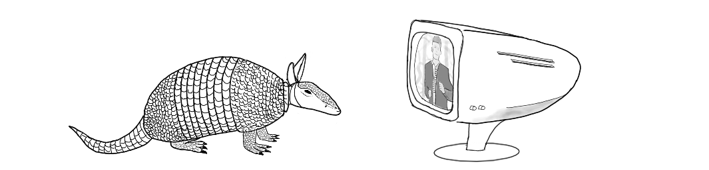

Playing multimedia with Dillo
Dillo doesn't have the capability to play audio or video directly from the browser, however it can easily offload this task to other programs. This page collects some examples of how to do watch videos and listen to audio tracks or podcasts by using an external player program. In particular we will cover mpv with yt-dlp which supports YouTube and Bandcamp among many other sites. 
Requisites
You will need at least Dillo version 3.2.0 to open URLs in external programs, be sure to install an updated version or built it yourself from source.
To play multimedia files you will also need mpv along with yt-dlp tool to extract video and audio streams from several sites. There are other alternatives, but these are the ones I have tested and they seem to work fine. Be sure to use an updated version of yt-dlp, as it is likely that old versions don't work anymore.
Opening URLs in mpv
Apart from opening video and audio URLs, Mpv can also open URLs that contain embedded video or audio elements by extracting the relevant sources from the website with the help of yt-dlp under the hood. For example, a YouTube video can be directly opened like so:
As well as any Bandcamp album:$ mpv 'https://www.youtube.com/watch?v=ZZ5LpwO-An4'
$ mpv 'https://tokyoskaparadiseorchestra.bandcamp.com/album/35'
When opening audio files, mpv won't show a new window and will read
the input keys from the stdin of the console. As we will be using Dillo to run
mpv, we change the force-window option to always open a window by
setting in the ~/.config/mpv/mpv.conf config file this option:
force-window=yes
You can also specify this option from the command line if you prefer to do it only for Dillo. You may want to also specify other options regarding the quality of videos, see the mpv(1) manual page.
In order to open an URL in mpv, we simply add this line to the
~/.dillo/dillorc config file:
Thelink_action="Open in mpv:mpv $url &"
$url variable is set by Dillo to the value of the URL of the
hyperlink. The & (ampersand) at the end ensures that when
Dillo is closed, the mpv process continues running.
You will need to close Dillo and open it again for the changes to take effect. Now when you are over a link, you can click with the right mouse button and select the new Open in mpv option, and the link should be opened by mpv. You can try with the above two links.
To search, consider using an alternative YouTube frontend like Invidious which doesn't need JavaScript.
Playing URLs in a queue
While opening a single video or audio URL is helpful, often multiple videos or audio links are intended to be opened in sequence. This can be achieved by using the mpv control socket and a small script that queues them in the current playlist (there are other tools, but this method has almost no extra requirements). To use this technique you will need to install the socat program as well, to communicate with the UNIX socket.
We will add two modes of playing elements, play next in the queue or add at
the end of the queue. The $url variable will provide the URL that
we should open, and the first argument will control where it gets added in the
queue. With mpv, this is controlled by the loadfile command,
which accepts the insert-next and append-next options.
Create the ~/.dillo/mpv/ directory and place the following
script in the file ~/.dillo/mpv/queue.sh, and make it executable
with chmod +x ~/.dillo/mpv/queue.sh:
#!/bin/sh
if [ -z "$url" ]; then
echo "error: url not set" >&2
exit 1
fi
mode=${1:-append-next}
sockfile=~/.dillo/mpv/mpv.sock
conffile=~/.dillo/mpv/mpv.conf
# Try queueing it by appending it, see loadfile in mpv(1) manual
echo "loadfile $url $mode" | socat - "UNIX-CONNECT:$sockfile" && exit 0
# Otherwise start a new mpv server in the background
mpv --include="$conffile" --input-ipc-server="$sockfile" "$url" &
Additionally, create a custom mpv configuration file at
~/.dillo/mpv/mpv.conf with the following content:
# Always show the player window even if it is only audio force-window=yes # Keep the player open after playing all files idle=yes # Select small video formats (optional) # ytdl-format="best[height<500]"
You can add more options that will only affect mpv when running in this queued mode, for example to disable video and only play audio which would reduce bandwidth usage, but these are enough for now.
Then add these two new actions in ~/.dillo/dillorc to play
files in the queue and restart Dillo:
link_action="Queue next in mpv:~/.dillo/mpv/queue.sh insert-next" link_action="Queue last in mpv:~/.dillo/mpv/queue.sh append-play"
The first time that you queue an URL, a new instance of mpv will start which will setup the socket, and will remain opened even if the file ends. Succesive URLs will be added to the playlist at the specified position.
Notice that the mpv program is running in the background, and if you close Dillo it will continue playing. You can in fact open Dillo later and queue more items and so on.
Closing remarks
The queue.sh script always opens all URLs in the same way, but
you could handle different URLs in different ways. The $origin
variable is also available with the value of the URL from which the
link was opened, which can also be used to determine how to load the URL.
You can also add more options, for example to handle audio and video separately with different mpv options for each type, or particular options for your hardware to better use the video hardware decoder (if present).
Finally, this technique works for any other program that can handle URLs which can be configured to be used with Dillo in the same way.